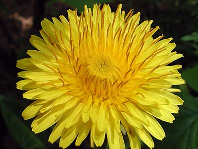

Одуванчик, солнечный цветок
Не у всех одуванчиков тычинки завиты в колечки. Это или признак сорта. Или бывают мужские и женские цветы. Или они завиваются не сразу.
Наконец, одуванчик готов разлететься по ветру и разнести семена. За это он и получил название.

Особый одуванчик
размером 10-15см


одуванчик с тычинками
в виде завитушек

одуванчик
с прямыми тычинками